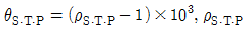
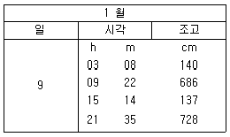
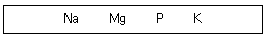
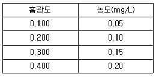
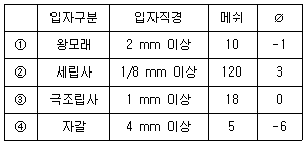

해양환경기사 (2015-05-31 기출문제)
1과목: 해양학개론
1. 암석의 큐리온도(Curie Temperature)는 대략 얼마인가?
- 200 ~ 400℃
- 400 ~ 600℃
- 600 ~ 800℃
- 800 ~ 1000℃
(정답률: 84%)

2. 해수 중 용존 기체의 해양-대기 간 기체교환에 관계가 가장 적은 것은?
- 기체의 확산계수
- 대기와 표층수의 기체분압차이
- 해수표면막의 두께
- 표층수의 이온 강도(ionic strength)
(정답률: 86%)
3. 심해파(深海波)에 대한 설명 중 맞는 것은?
- 심해파의 파속은 수심, 파장 그리고 주기의 함수이다.
- 심해파의 파속은 파장의 제곱에 반비례한다.
- 심해파의 파속은 파장과는 관계가 없고 수심만의 함수이다.
- 수심이 파장의 1/2보다 깊다면 심해파이다.
(정답률: 89%)
4. 지형류란 어떤 힘들이 서로 평형을 이룰 때 나타나는 해류인가?
- 압력경도력과 코리올리 힘
- 압력경도력과 바람응력
- 바람응력과 코리올리 힘
- 가속력과 코리올리 힘
(정답률: 90%)
5. Krumbein이 사용한 Udeen-Wentworth scale을 파이(ø) 값으로 환산했을 때( ø=-log2d), 다음 중 입자의 크기가 4mm이면 파이( ø)값은?
- -2
- -1
- 0
- 1
(정답률: 91%)
6. 다음 중 침강입자를 모으는 용기로서 가장 적합한 것은?
- 세디먼트 트랩(Sediment trap)
- 밀리포어 필터(Millipore filter)
- 반돈(Van Dorn) 채수기
- 무오염 채수기
(정답률: 90%)
7. 겨울철 강물이나 호수의 물은 표면에서부터 얼기 시작한다. 이에 반하여 염분이 24.7‰ 이상인 해수는 겨울철에 추워도 잘 얼지 않는데 이 것이 가장 큰 이유는?
- 소금물은 육수에 비하여 빙점이 낮기 때문이다.
- 바다의 수심이 강이나 호수보다 깊기 때문이다.
- 해수의 밀도 극대 온도가 빙점보다 낮으므로, 모든 물이 빙점에 달할 때까지 결빙이 일어나지 않기 때문이다.
- 겨울철 바닷물의 수온이 강물의 수온보다 높기 때문이다.
(정답률: 83%)
8. 황해바다 가운데서 사광(placer)이 발견되었다고 가정을 할 때 다음 중 가장 연관이 깊은 작용은?
- 저탁류
- 삼각주 형성
- 연안류
- 해수면 변화
(정답률: 63%)
9. 대양에서 영구수온약층(permanent thermocline)이 가장 깊은 수심에서 나타나는 해역은?
- 적도 부근
- 위도 20˚ 부근
- 위도 40˚ 부근
- 극지방
(정답률: 77%)
10. 해파가 해안에 접근할 때에 파봉이 해안선에 평행하게 되는 현상은 무엇 때문인가?
- 회절
- 굴절
- 반사
- 간섭
(정답률: 89%)
11. 태풍 통과시 태풍 중심부의 해양 표면수온은?
- 변화가 없다.
- 하강한다.
- 상승한다.
- 하강할 경우와 상승할 경우가 각각 절반정도이다.
(정답률: 88%)
12. 조석을 일으키는 주된 원인으로 가장 적합한 것은?
- 구심력의 차
- 해저지형의 차
- 달과 태양의 거리 차
- 천체인력의 지구표면 각점과 지구중심과의 차
(정답률: 83%)
13. 세계적으로 알려진 연안용승해안이 넷 있으며 이 용승해안에서 각각 발생하는 용승수를 운반하는 해류도 잘 알려져 있다. 다음 해류 중 연안 용승수를 운반하지 않는 해류는?
- 벤게라 해류
- 카나리 해류
- 캘리포니아 해류
- 만류
(정답률: 76%)
14. 해일의 주된 발생 원인은?
- 조력
- 지진
- 빙하
- 핵실험
(정답률: 92%)
15. 다음 중 입도분석에 의한 퇴적물 분류 시 가장 사용되지 않는 것은?
- 평균값
- 중앙값
- 최빈값
- 최대값
(정답률: 77%)
16. 기요(guyot)의 다른 명칭은?
- Sea mount
- table mount
- Plateau
- abyssal hill
(정답률: 83%)
17. 세계 대양의 표층 염분은 적도를 중심으로 위도에 따라 약간씩 차이가 있다. 다음 중 표층 염분 분포로 볼 때 일반적으로 가장 높은 곳은?
- 열대의 해양
- 아열대의 해양
- 온대의 해양
- 한대의 해양
(정답률: 82%)
18. 해저 확장과 대륙괴가 분리되는 대체적인 속도는?
- 1 ~ 6 cm/년
- 10 ~ 60 cm/년
- 60 ~ 100 cm/년
- 600 ~ 1000 cm/년
(정답률: 81%)
19. 해양에서 탄산염 퇴적물이 가장 많이 퇴적되어 있는 곳은?
- 대양저 산맥
- 해구
- 북태평양 수렴대
- 후열도 분지
(정답률: 66%)
20. 해양의 대순환에서 유속은 항상 대양의 서쪽에서 가장 세다. 이것을 결정하는 요인으로서 중요하지 않은 것은?
- 바람
- 수심
- 지구자전효과
- 마찰
(정답률: 67%)
2과목: 해양생태학
21. 해양에 유출된 유류가 해수 중에서 진행하는 과정이 아닌 것은?
- 확산
- 증발과 용해
- 여과와 투석
- 유화와 침전
(정답률: 87%)
22. 다음 연체동물 중 일생동안 부유생활을 하는 무리는?
- 두족류
- 굴족류
- 무판류
- 익족류
(정답률: 75%)
23. 다음 중 조간대 저서생물의 대상분포(zonation)를 결정하는 물리, 화학적 작용 요인으로서 거리가 가장 먼 것은?
- 조석
- 지형
- 암석의 질
- 산소
(정답률: 77%)
24. 빛의 강도에 따른 광합성과의 관계에 대한 설명 중 옳은 것은?
- 빛의 강도가 증가하면 할수록 광합성양은 계속 증가한다.
- 광합성은 식물체내의 엽록소 양에 좌우되므로 빛의 양과는 관계가 없다.
- 광합성은 빛의 파장 중 가시광선만 이용하므로 빛의 강도가 약할수록 광합성양이 증가한다.
- 빛의 강도가 증가하면 어느 수준까지는 광합성양은 증가하지만 빛이 너무 강하면 광합성은 저해된다.
(정답률: 91%)
25. 다음 중 일(전)생 플랑크톤(holoplankton)이 아닌 것은?
- Globigerina
- Podon
- Oikopleura
- Pluteus
(정답률: 78%)
26. 해양 포유동물이 오랫동안 잠수해 있기 위한 산소 공급 기작의 설명으로 틀린 것은?
- 많은 해양포유동물은 유상동물보다 더 높은 혈액 체적을 보유한다.
- 해양 포유동물은 단위 혈액 체적당 더 높은 산소량을 보유한다.
- 해양 포유동물은 잠수동안 순환계는 여러 기관으로의 혈액공급을 차단한다.
- 해양 포유동물은 잠수기간 동안 심장박동을 늘린다.
(정답률: 88%)
27. 보상심도(compensation depth)를 투명도에 의해서 추정 할 때 투명도가 10 m인 곳의 보상심도는 대략 몇 m인가?
- 13.4 m
- 26.7 m
- 32.4 m
- 20.0 m
(정답률: 74%)
28. 보상심도(Compensation depth)를 바르게 설명한 것은?
- 햇빛이 투과되는 수층으로 생산성이 높은 곳이다.
- 광합성에 의한 산소 생산량과 호흡에 의한 소비량이 일치하는 깊이이다.
- 순생산량이 산소 소비량보다 크기 시작하는 깊이이다.
- 빛이 투과하는 한계깊이를 말한다.
(정답률: 85%)
29. 동물플랑크톤 중 선호하는 수온이 뚜렷하여 해류의 지표종으로 이용되는 동물은?
- 모악동물
- 절지동물
- 익족류
- 자포동물
(정답률: 81%)
30. 저어류의 채집기가 아닌 것은?
- 걸그물
- 두리그물
- 끌그물
- 형망
(정답률: 75%)
31. 환경요인의 변동이 큰 갯벌의 저서동물 군집 중 r-선택성의 생물의 특성으로 옳은 설명은?
- 대형이면서 높은 내성을 가진다.
- 비교적 긴 생활사를 가진다.
- 높은 번식력을 가진다.
- 개체군 크기가 안정되어 있다.
(정답률: 79%)
32. 해수의 온도가 높아져 생물이 폐사하는 원인에 대한 설명 중 폐사원인과 가장 거리가 먼 것은?
- 해수중의 용존 산소량이 감수하여 호흡장애 초래
- 생체내 효소의 활동이 억제되어 생리장애 초래
- 생체내 단백질의 변성이 일어나 생리장애 초래
- 생체내 탄수화물 축적이 일어나 생리장애 초래
(정답률: 76%)
33. 다음 중 순수하게 해수에만 출현하는 종으로 구성된 동물군이 아닌 것은?
- 해면류
- 두족류
- 모악류
- 피낭류
(정답률: 65%)
34. 천해역의 조하대 암반 생물군집을 설명한 내용 중 옳지 않은 것은?
- 빛이 도달하지 않은 곳이기 때문에 식물체가 자라지 않는다.
- 대표적으로 대형 갈조류로 구성되는 켈프숲(kelp forest)이 여기에 속한다.
- 물리적 한경요인의 변화의 폭은 수심이 깊어짐에 따라 감소한다.
- 저성장성 식물들이나 고착성 무척추동물들이 주로 서식한다.
(정답률: 83%)
35. 하구역에 서식하는 대형저서동물의 직접적인 영양원으로 가장 중요한 것은?
- 미량금속
- 유기 쇄설입자
- 식물플랑크톤
- 용존유기물
(정답률: 78%)
36. 중형 저서동물에 속하는 분류군은?
- 이미패류
- 저서성 요각류
- 십각류
- 불가사리류
(정답률: 86%)
37. 적조를 일으키는 와편모조류에 속하는 것은?
- Skeletonema속
- Chaetoceros속
- Nitzschia속
- Gymnodinium속
(정답률: 89%)
38. 해양에서 유류오염이 발생하였을 경우 직접적으로 나타날 수 있는 현상이 아닌 것은?
- 생물농축을 통한 유류 축적
- 부유생물의 성장 저해 및 생존율 감소
- 바다새의 산란 및 부화율 감소
- 수산물의 상품성 저하
(정답률: 57%)
39. 해중 식물 군락이 생태적으로 매우 중요한 이유와 가장 거리가 먼 것은?
- 기초생산력이 증대된다.
- 작은 동물이나 부착생물의 서식장소를 제공한다.
- 질소, 인 등의 영양염류를 흡수한다.
- 회유성 어류의 서식처가 된다.
(정답률: 80%)
40. 바다에서 영양염의 주된 공급원이 아닌 것은?
- 수괴의 수직혼합
- 용승
- 육수의 유입
- 강우
(정답률: 88%)
3과목: 해양계측학
41. 해저 퇴적물인 점토질(clay) 입자의 크기는?
- 0.2 ~ 0.4 mm
- 0.062 ~ 0.2 mm
- 0.004 ~ 0.062 mm
- 0.004 mm 이하
(정답률: 84%)
42. 232Th는 α와 β붕괴로 인하여 208Pb의 안정한 동위원소로 된다. β붕괴는 몇 번 일어나는가?
- 2
- 4
- 6
- 8
(정답률: 68%)
43. 해양에서 표층부터 수심 20m까지의 밀도는 1.026g/cm3이고 20m 보다 깊은 수심에서의 밀도는 1.027g/cm3인 이층(two-layer) 밀도구조를 가지고 있다고 가정하다. 10m에 있는 물과 30m에 있는 물의 θS.T.P는 각각 얼마인가?(단,

는 특정 수심(P), 일정 온도(T), 일정 염분(S) 일 때의 밀도이다.)- 26(10m), 27(30m)
- 20(10m), 30(30m)
- 10(10m), 30(30m)
- 27(10m), 28(30m)
(정답률: 74%)
44. 다음 중 파장이 가장 긴 것은?
- 조석
- 풍파
- 중규모 와류
- 내부파
(정답률: 48%)
45. Aanderaa 수위계(WLR 5/6)는 몇 개의 채널(channel)을 이용하여 기록하는가?
- 2개
- 3개
- 4개
- 5개
(정답률: 76%)
46. 염분계(salinometer)는 해수의 어떤 특성을 사용하여 염분을 측정하는가?
- 전기전도도
- 빛의 투과도
- 음파의 속도
- 해수의 색깔
(정답률: 88%)
47. 대조가 일어나는 시기는?
- 하현전 약 2일
- 상현후 약 2일
- 보름(만월)후 약 2일
- 하현후 약 2일
(정답률: 85%)
48. 다음 중 전파의 위상차를 이용하는 항법은?
- LORAN-A
- LORAN-C
- Decca
- NNSS
(정답률: 72%)
49. LORAN A와 C 각각의 발신 주파수는?
- A : 2 MHz, C : 100KHz
- A : 100KHz, C : 2MHz
- A,C : 100 KHz
- A,C : 2 MHz
(정답률: 76%)
50. 해수의 밀도에 영향을 주는 요인과 가장 거리가 먼 것은?
- 용존산소량
- 수온
- 염분
- 수압
(정답률: 81%)
51. 위성에 의한 해양관측의 주요 장점으로 가장 적합한 것은?
- 광범위한 해역에 대한 동시 관측
- 구름에 덮힌 해역의 관측
- 높은 정밀도
- 각 수층의 관측
(정답률: 91%)
52. 위성사진(satellite image)에서 가장 효과적이고 직접적으로 얻을 수 있는 정보는?
- 해면기압
- 심층해류
- 바다 표면수온
- 바다 표면염분
(정답률: 91%)
53. 심해의 파랑(너울)이 해안에 가까워지면서 일어나는 현상은?
- 파장은 짧아지고 파고는 높아진다.
- 파장은 짧아지고 파고는 낮아진다.
- 파장은 길어지고 파고는 높아진다.
- 파장은 길어지고 파고는 낮아진다.
(정답률: 80%)
54. 위도 30˚에서 100 cm/s의 해류가 흐를 때 미치는 Coriolis 가속도는? (단, 지구자전각속도 : 7.29×10-5rad/sec임)
- 7.29㎝/sec2
- 7.29×10-1sec2
- 7.29×10-2sec2
- 7.29×10-3sec2
(정답률: 79%)
55. 수온과 수심을 연속적으로 기록하여 수온약층 조사에 가장 유용하게 사용되나 사용수심이 300 m 이하로 제한되어 있는 수직 온도 기록계는?
- BT
- CTD
- STD
- Reversing thermometer
(정답률: 79%)
56. 표면에서 취송류(Drift Current)의 크기는 바람의 속도에 어느 정도인가?
- 50%
- 45%
- 15%
- 3%
(정답률: 77%)
57. 다음 기기 중에서 수심을 측정할 수 있는 기기가 아닌 것은?
- XBT
- PDR
- Nansen bottle
- 전도온도계(방압과 피압)
(정답률: 66%)
58. 다음 조석표는 1월 9일에 대한 인천항의 조석을 나타낸 것이다. 인천항의 12시 정각의 조고는? (단, 평균해면은 464 cm, 표차는 0.581 이다.)

- 약 480 m
- 약 456 m
- 약 423 m
- 약 399 m
(정답률: 77%)
59. 퇴적물의 입도분석 자료를 정량적으로 분석하기 위해 계산하는 분급도란?
- 분포곡선의 평균 기울기
- 분포곡선의 뾰족한 정도
- 평균값을 중심으로 한 분산 정도
- 평균값을 중심으로 한 대칭성
(정답률: 77%)
60. 광의 산란 중 산소나 질소 분자와 같이 입경이 작은 입자로 인해 생기는 것을 레이리(Reyleigh)산란이라 한다. 이 산란은 파장의 몇 승에 반비례 하는가?
- 1
- 2
- 3
- 4
(정답률: 54%)
4과목: 해수의 수질분석
61. 다음 보기 중에서 해수 중 농도가 가장 높은 이온은?

- Na
- Mg
- P
- K
(정답률: 80%)
62. 해수 중 유기인 분석 시 사용되는 기구 및 기기가 아닌 것은?
- 구데르나 - 데니쉬 농축기
- 스나이더 컬럼
- 유리제 모세관 칼럼
- 원심분리기
(정답률: 64%)
63. 원자흡광도법(Atomic Absorption Spectrometry)에 대한 설명 중 옳지 않는 것은?
- 장치는 광원부-시료원자화부-단색화부-측광부로 배열된다.
- 광원은 원자흡광 스펙트럼선의 선폭보다 좁은 선폭을 갖고 휘도가 높은 스펙트럼을 방사 하는 중공음극램프(hollow cathode lamp)가 많이 사용된다.
- 원자흡광분석에 사용되는 어떠한 불꽃이라도 가연성 가스와 조연성가스의 혼합비는 감도에 크게 영향을 준다.
- 표준첨가법에 의한 검량선 작성 시 표준물질이 같은 농도로 함유되도록 표준용액을 첨가한다.
(정답률: 68%)
64. Microtox bioassay 중 염수추출법에 대한 내용이 아닌 것은?
- 염화메틸렌을 추출용매로 이용한다.
- 전처리 과정이 유기용매 추출법보다 단순하다.
- 퇴적물 내 공극수와 무기용매에 의해 추출되는 성분을 이용한다.
- 퇴적물 내 용존태 및 수용성으로 추출되는 독성물질을 검색한다(주로 이온성 금속류).
(정답률: 58%)
65. 함수율이 50%인 퇴적물 중의 COD를 측정하기 위하여 습시료 1g을 500mL 삼각플라스크에 넣고 0.1N KMnO4용액 50mL를 가하였다. 여기에 10% NaOH 용액 5mL를 넣고 물중탕에서 1시간 동안 중탕한 후 증류수를 가해 부피를 500mL로 하였다. 다시 10% KI 용액 5mL와 4% NaN3용액 1방울을 넣고 잘 흔들어 섞은 다음 유리섬유필터를 사용하여 여과하고, 여액 100mL를 250mL 삼각 플라스크에 옮겼다. 여기에 30% 황산 2mL를 넣고 녹말용액을 지시약으로 하여 0.1 N Na2S2O3용액으로 적정해서 9.5mL를 소비하였다. 바탕시험을 위와 동일하게 한 결과 0.1 N Na2S2O3용액이 10mL 소비되었을 때 건중량 기준의 퇴적물의 COD는? (단, 0.1N Na2S2O3용액의 여가는 1.000이다)
- 500 µg/g
- 1000 µg/g
- 2000 µg/g
- 4000 µg/g
(정답률: 58%)
66. 다음은 연안 해수시료를 100배 농축한 후 원자흡광광도법으로 카드뮴 농도를 측정한 결과이다. 해수시료의 흡광도가 0.160 일 때 카드뮴농도는?

- 0.40 µg/L
- 0.80 µg/L
- 1.20 µg/L
- 1.60 µg/L
(정답률: 78%)
67. 클로로필-a을 측정하는 방법에 대한 설명 중 틀린 것은?
- 클로로필은 90% 아세톤으로 색소를 추출한다.
- 추출액의 흡광도를 630, 647, 664 nm에서 측정한다.
- 클로로필 측정용 시료는 빛에는 안정하지만 곧바로 분석이 안 될 때에는 냉동 보관하여야 한다.
- 해수 시료를 여과할 때 탄산마그네슘 몇 방울을 첨가하면 여과지에 걸러진 색소가 산성화되는 것을 방지할 수 있다.
(정답률: 63%)
68. 라우릴 트립토스 부이온을 넣은 발효관을 온도 35±0.5℃에서 48±3 시간 배양하여 가스가 발생 하면 대장균군이 있는 것으로 간주하는 시험은?
- 완전시험
- 정량시험
- 추정시험
- 확정시험
(정답률: 76%)
69. 다음 측정 항목 중 시료용기로써 유리병을 사용할 수 없는 것은?
- 유기인
- 페놀
- 규산규소
- COD
(정답률: 79%)
70. 해저 표층 퇴적물 시료를 채취하기 위한 장비가 아닌 것은?
- 반빈 채취기
- 니스킨 채취기
- 스미스-맥킨타이어 채취기
- 라퐁드 채취기
(정답률: 74%)
71. 해수 중에 들어 있는 불소 성분을 란탄-알리자린 컴플렉션법을 이용하여 620nm에서 분석할 경우 알루미늄 및 철의 방해영향은 어떤 실험 과정에 의해 제거되는가?
- 중화
- 증류
- 산화
- 환원
(정답률: 71%)
72. 선박의 방오도료로 많이 이용되고 있으나 최근 Imposex현상 등 환경문제를 유발하여 세계적으로 규제하고 있는 TBT를 분석하는 방법으로 잘못된 것은?
- 해수 중에 들어 있는 것을 노르말헥산으로 추출한다.
- 광분해되거나 생분해될 우려가 있으므로 차광용기를 사용하여 빠른 시간 안에 분석해야 한다.
- 농축과정은 회전증발농축기 또는 구데르나-데니쉬 농축기를 사용하여도 된다.
- 사용되는 시약 중 무수황산나트륨은 잔류농약용 혹은 특급시약을 450℃에서 5시간 동안 건조시킨 후 170℃에서 보관하고 사용직전에 상온으로 식혀 사용된다.
(정답률: 66%)
73. 해양 생물의 생체 내 중금속류를 측정할 때 분석오차를 줄이기 위해 생물시료를 탈장시켜야 한다. 이 때, 탈장 시간으로 가장 적절한 것은?
- 6시간
- 12시간
- 24시간
- 48시간
(정답률: 81%)
74. APDC/DDDC 킬레이트제를 넣고 MIBK 유기용매로 추출하여 원자흡광광도법으로 크롬을 측정하는 설명 중 틀린 것은?
- 용매추출법으로 측정하면 Cr6+만 측정된다.
- 총크롬을 측정하기 위해서는 산화제로 처리하여 Cr3+을 Cr6+으로 산화시켜야 한다.
- 용매추출법으로 측정하면 Cr3+과 Cr6+모두 측정된다.
- 총크롬 측정시 과망간산칼륨을 산화제로 사용한다.
(정답률: 73%)
75. 다음 중 입도 등급의 구분이 틀린 것은?

- ①
- ②
- ③
- ④
(정답률: 77%)
76. 해수 중 황화수소 실험범에 대한 설명으로 틀린 것은?
- 황화수소는 해수중의 용존 산소 또는 대기에 노출되었을 때 매우 쉽게 산화한다.
- 시료를 시료병에 받을 때 기포가 발생하지 않게 한다.
- 현장에서 즉시 측정하지 않을 경우 1 mL의 초산아연용액을 첨가한다.
- 시료를 암소에 보관할 때 수 주간 안정하다.
(정답률: 78%)
77. 해수 중 구리, 납 등 미량금속을 분석하기 위한 시수를 보관할 때 질산을 넣어 pH 2 이하로 보관하는 이유와 가장 거리가 먼 것은?
- 미생물에 의해 분해되는 것을 방지하기 위해
- 용기벽에 흡착되는 것을 방지하기 위해
- 응집침전되는 것을 방지하기 위해
- 부유물질에 흡착되는 것을 방지하기 위해
(정답률: 68%)
78. 유출유 중의 포화탄화수소와 방향족탄화수소의 식별법에 대한 설명 중 옳은 것은?
- 포화탄화수소와 방향족탄화수소의 검출기는 GC-FID이다.
- 포화탄화수소와 방향족탄화수소의 분리컬럼은 스테인레스강 컬럼이다.
- 포화탄화수소의 운반기체는 질소이고, 방향족탄화수소는 헬륨이다.
- 포화탄화수소와 방향족탄화수소의 분리컬럼의 충전제는 동일하다.
(정답률: 67%)
79. 질산염(Nitrate)의 분석원리를 가장 잘 설명한 것은?
- Cd와 Cu가 충진된 유리관에 시료를 넣어 시료에 존재하는 질산염을 산화시켜 아질산염(nitrite)으로 만든 후, 아질산염을 시약들과 반응시켜 발색된 상태에서 흡광도를 측정한다.
- Cd와 Cu가 충진된 유리관에 시료를 넣어 시료에 존재하는 아질산염을 산화시켜 질산염으로 만든 후, 질산염을 시약들과 반응시켜 발색된 상태에서 흡광도를 측정한다.
- Cd와 Cu가 충진된 유리관에 시료를 넣어 시료에 존재하는 질산염을 환원시켜 아질산염으로 만든 후, 아질산염을 시약들과 반응시켜 발색된 상태에서 흡광도를 측정한다.
- Cd와 Cu가 충진된 유리관에 시료를 넣어 시료에 존재하는 아질산염을 환원시켜 질산염으로 만든 후, 질산염을 시약들과 반응시켜 발색된 상태에서 흡광도를 측정한다.
(정답률: 76%)
80. 해수 중의 용존산소에 관한 설명이 옳은 것은?
- 수온이나 염분이 증가하면 산소포화량은 증가한다.
- 수온이나 염분과는 상관없고 다만 수압에 따라 증가한다.
- 수온이나 염분이 감소하면 산소포화량은 증가한다.
- 수온은 상관없고 염분의 증가에 따라 산소포화량이 증가한다.
(정답률: 73%)
5과목: 해양관련법규
81. 유류오염 손해배상 보장계약 증명서를 비치해야 하는 한국선박은?
- 200톤 이상의 산적유류를 운송하는 선박
- 400톤 이상의 포장화물을 운송하는 선박
- 총톤수 400톤 이상의 일반선박
- 총톤수 150톤 이상의 모든 선박
(정답률: 76%)
82. 선박으로부터의 오염방지를 위한 국제협약상 기름에 의한 해양오염방지를 위한 특별한 강제조치의 채택이 요구되는 특별해역에 속하는 것은?
- 동중국해
- 뱅골만
- 지중해
- 멕시코만
(정답률: 82%)
83. 폐기물 및 그 밖의 물질의 투기에 의한 국제협약(1972 LC협약)상 해양투기를 금지하고 있는 물질이 아닌 것은?
- 폐수 처리장 오니
- 플라스틱, 어망, 로프류
- 유기할로겐 화합물
- 수은 및 그 화합물
(정답률: 71%)
84. 해양환경관리법령상 방제대책본부의 구성, 운영에 관한 설명으로 틀린 것은?
- 방제대책본부장은 국민안전처장관이 되고, 그 구성원은 국민안전처 소속공무원과 관계기관의 장이 파견한 자로 구성한다.
- 대형사고일 경우에는 방제대책본부장이 국무총리로 격상된다.
- 방제대책본부장은 관계 기관의 장에게 방제대책본부에 근무할 자의 파견과 방제작업에 필요한 인력 및 장비 등의 지원을 요청할 수 있다.
- 방제대책본부장은 해양환경 보전과 과학적인 방제를 위한 기술지원 및 자문을 위하여 관계 전문가로 구성된 방제기술지원협의회를 구성, 운영할 수 있다.
(정답률: 83%)
85. 다음 중에서 선박오염물질기록부 중 기름기록부 비치의무 대상 선박이 아닌 것은?
- 총톤수 50톤급 화물선
- 총톤수 10톤급 유조선
- 경하배수톤수 300톤급 군함
- 총톤수 100톤급 여객선
(정답률: 57%)
86. 해양환경관리법령상 해양수산부장관 소속 해양환경 감시원의 직무가 아닌 것은?
- 해양공간으로 유입되거나 해양에 배출되는 폐기물의 감시
- 폐기물해양수거업자 및 퇴적오염물질
- 환경관리해역에서의 해양환경개선을 위한 오염원 조사 활동
- 해양시설오염물질기록부, 해양시설오염비상계획서와 관련된 지도, 점검 의무
(정답률: 46%)
87. 유류오염손해배상보장법상 유류의 범주에 포함되지 않은 것은?
- 원유
- 중유
- 지속성 식물성유
- 윤활유
(정답률: 84%)
88. 선박으로부터의 오염방지를 위한 국제협약상 크린 밸러스트(Clean ballast)의 기준이 되는 배출물의 유분 농도는?
- 15 ppm 이하
- 50 ppm 이하
- 100 ppm 이하
- 500 ppm 이하
(정답률: 61%)
89. 유류오염손해배상보장법의 목적과 거리가 먼 것은?
- 유류오염손해의 배상을 보장하는 제도 확립
- 국제 원유가 안정 도모
- 피해자의 보호
- 선박소유자의 책임 명확화
(정답률: 77%)
90. 해양환경관리법상 선박이나 해양시설 등에 비치하여야 할 자재 중 오일펜스 A형의 기준은?
- 수면 위 20 cm 이상 30 cm 미만, 수면 아래 30 cm 이상 40 cm 미만
- 수면 위 30 cm 이상 60 cm 미만, 수면 아래 40 cm 이상 90 cm 미만
- 수면 위 60 cm 이상 90 cm 미만, 수면 아래 90 cm 이상 120 cm 미만
- 수면 위 90 cm 이상, 수면 아래 120 cm 이상
(정답률: 68%)
91. 유류오염손해배상보장법상 유조선의 선박소유자가 유류오염 손해를 배상할 책임이 없는 경우는?
- 유조선의 감항성이 부족한 경우
- 용선자의 상사과실로 발생한 경우
- 제3자의 고의만으로 발생한 경우
- 타선과 쌍방과실로 충돌한 경우
(정답률: 86%)
92. 연안의 효율적인 관리를 위한 연안기본조사 주기는?
- 1년마다
- 2년마다
- 3년마다
- 5년마다
(정답률: 70%)
93. 국민안전처장관은 해양에 오염물질을 배출한 방제의무자가 자발적으로 방제조치를 행하지 아니하는 때에는 그 자에게 시한을 정하여 방제조치를 하도록 명령을 하게 된다. 다음 중 방제조치 명령에 포함되지 않는 사항은?
- 방제조치 기간
- 방제조치 필요 해역의 지정
- 오염물질의 회수 등 방제조치의 방법
- 해양오염방제업체의 선정
(정답률: 77%)
94. 대량의 기름 폐기물이 법령의 기준을 초과하여 배출된 경우 발견자 및 해당 관련자는 지체없이 누구에게 신고하여야 하는가?(2022년 04월 확인된 규정 적용됨)
- 당해 선박의 선장
- 해양항만청장
- 당해 선박의 소유자
- 해양경찰청장
(정답률: 69%)
95. 유류오염손해배상보장법상 국제기금에 유류오염손해금액을 청구할 수 있는 자는?
- 선박소유자
- 보험자
- 피해자
- 가해자
(정답률: 78%)
96. 지역긴급방제실행계획에 포함되어야 할 내용이 아닌 것은?
- 오염물질별 사고위험평가 및 대응전략
- 해상안전의 확보와 위험방지 조치
- 방제조직의 운영
- 사고유형별 방제조치 계획
(정답률: 49%)
97. 유류오염손해배상보장법상 국제기금 및 책임제한절차에 대한 설명으로 틀린 것은?
- 선박소유자 등으로부터 배상받지 못한 유류오염손해 금액은 국제기금협약에 따라 보상받을 수 있다.
- 국제기금협약에 의한 관할권이 있는 경우에는 외국법원이 한 확정판결도 준용한다.
- 법원은 현저한 손해를 피하기 위하여 필요하다고 인정하는 때에는 직권으로 책임제한사건을 다른 관할법원에 이송할 수 있다.
- 유류수령인은 연간 수령한 분담유의 합계량이 20만톤을 초과한 경우에 그 다음 연도에 그 수령량을 보고하여야 한다.
(정답률: 69%)
98. 해양환경관리공단의 사업이 아닌 것은?
- 침몰선박(침몰유려 선박 및 침수선박포함)의 관리
- 해양오염 방제관련 국제협력
- 해양시설 오염비상계획서 작성 대행
- 선박해양오염비상계획서의 검인
(정답률: 44%)
99. 유류오염 대비 대응 및 협력에 관한 국제 협약(OPRC협약)에서 규정하고 있는 사항이 아닌 것은?
- 선박 내 기름기록부 비치 및 기록 의무
- 선박해양오염비상계획서 비치의무
- 기름오염 대비, 대응을 위한 국가긴급계회 수립
- 인접국가간 기름오염 대비, 대응에 관한 협정 체결
(정답률: 65%)
100. 해양오염의 사전 예방 또는 방제에 관한 국가긴급 방제계획에 포함되어야 할 사항이 아닌 것은?
- 국가방제체제 및 대응조직의 구성과 운영
- 방제관련해역 특성정보 및 자료
- 해양오염 대비 대응을 위한 교육과 훈련
- 오염현장 상황조사, 방제방법 결정, 사고해역 지휘 통제 등 방제실행
(정답률: 63%)